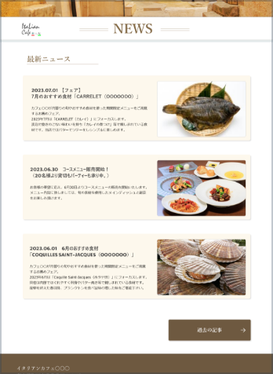

CREATION

- 
cafeteriaコーポレートサイト
コンセプトワーク/デザイン/html/css
- こだわったポイント
- コンセプト「お洒落で居心地いい雰囲気を感じられるカフェ」を軸 に、雰囲気を感じるポイントを調べ、外観や内装等のまず店に訪れ た際に目に入る部分をサイト上部に持ってくることでそれを表現し ました。
- 苦戦したポイント
- サイトのトップに持ってくるものは何が適切なのか、競合サイト等 を調べる中で、顧客がカフェに行く目的を書き出し案件のカフェに 近いものを見つけるのに苦戦しました。